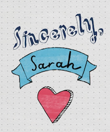
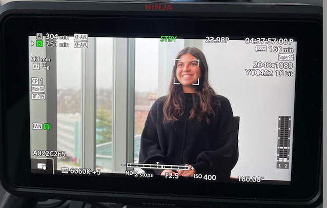
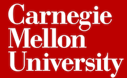
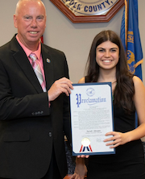

Media Gallery
Explore My Last Few Years With Me!

View Here!
Sincerely, Sarah
A year-long stint as a Content Creator for the @carnegiemellon official Instagram, currently followed by almost 70,000 users.

View Here!
Dietrich Donor Video
I was selected by the Dietrich Dean's Office to record a "Day In The Life of a Dietrich Student" video for donors. 2023 was the first time a single student has been chosen to record the video.

View Here!
Student Spotlight - CMU English Department
An interview with the CMU English Department to be read by perspective / current students and families.

View Here!
Straight Above The Curve
When I was in 7th grade, I was diagnosed with scoliosis and had an idea to start a blog about my experiences. Ever since, I've been a passionate Scoliosis Awareness advocate.